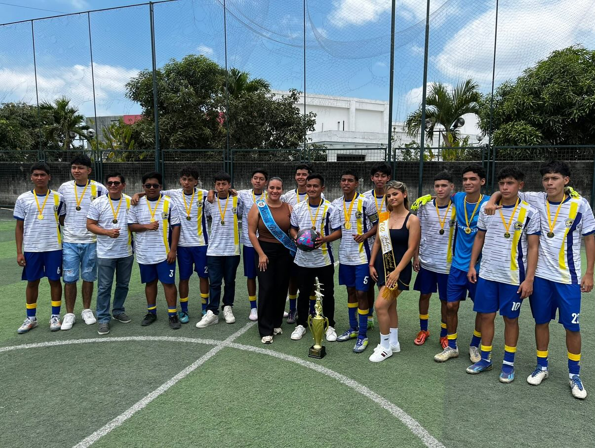
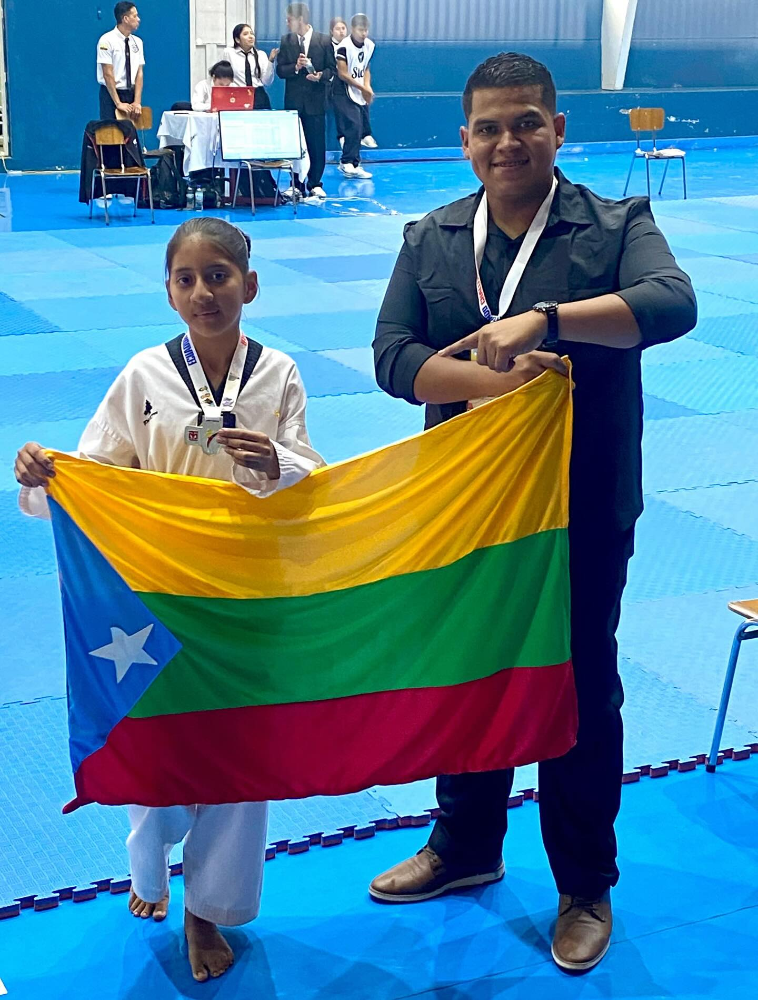
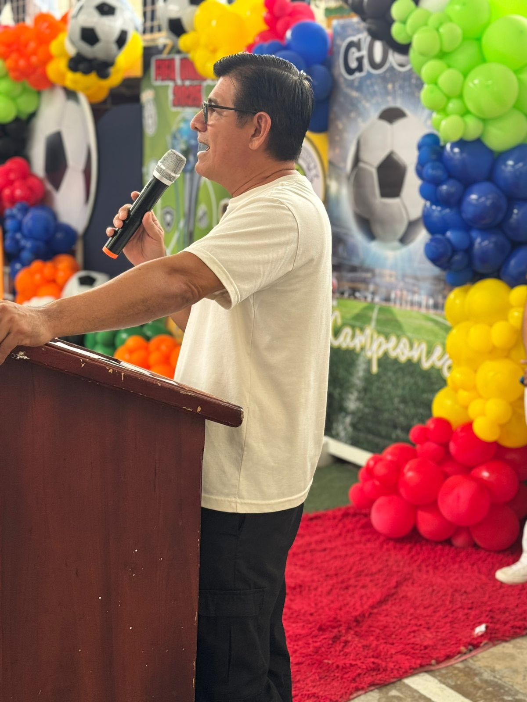
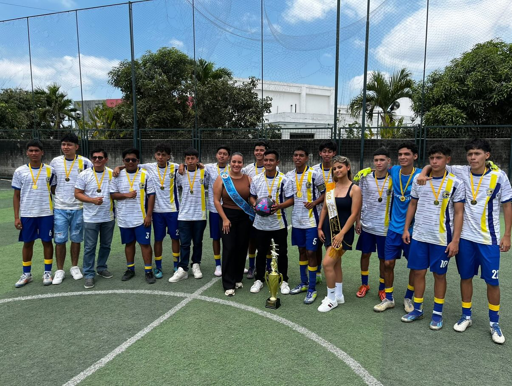
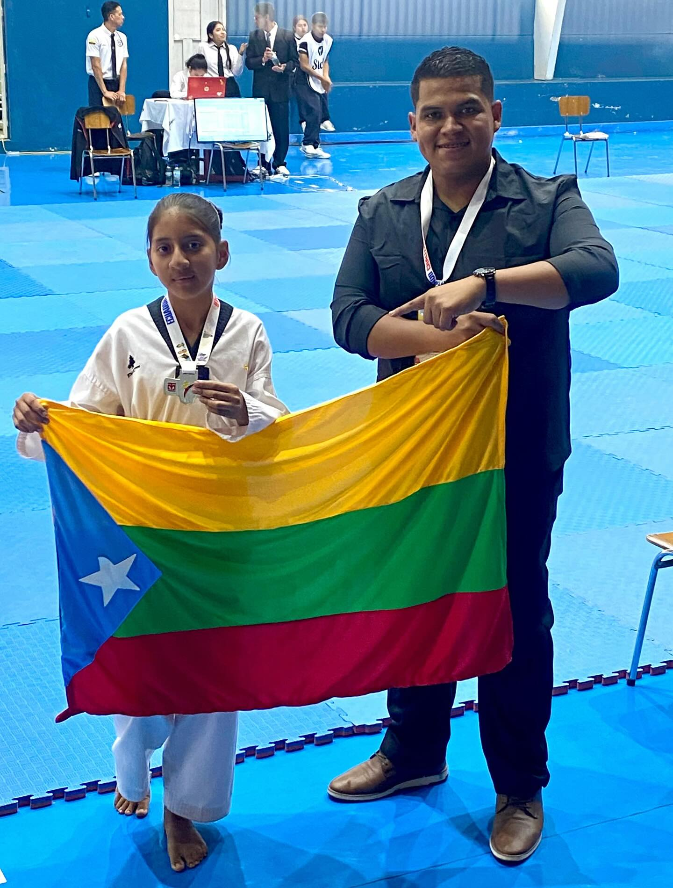
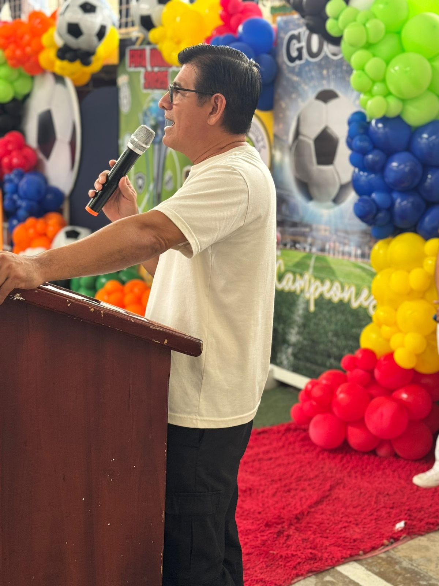


 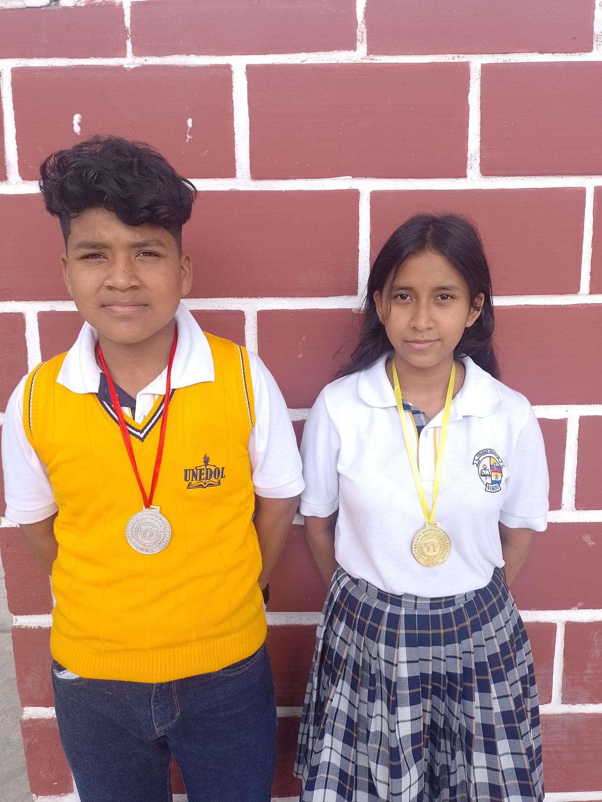
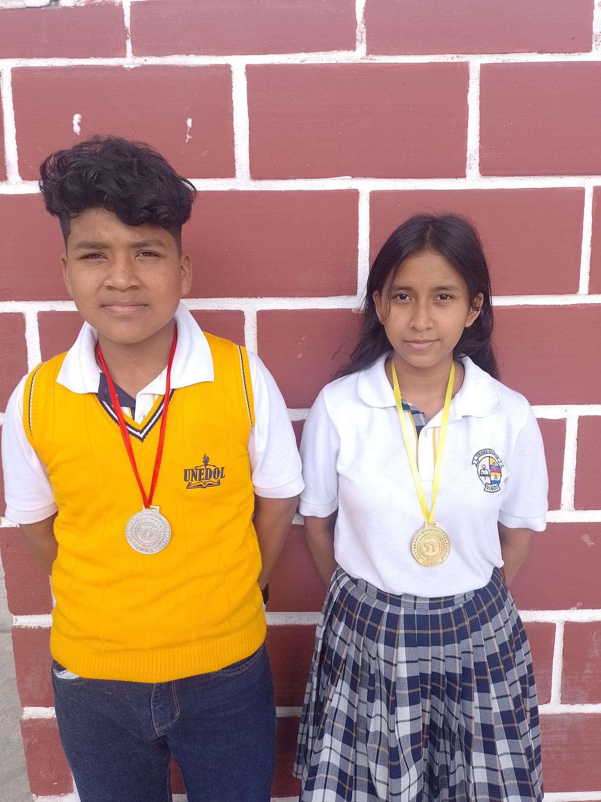
 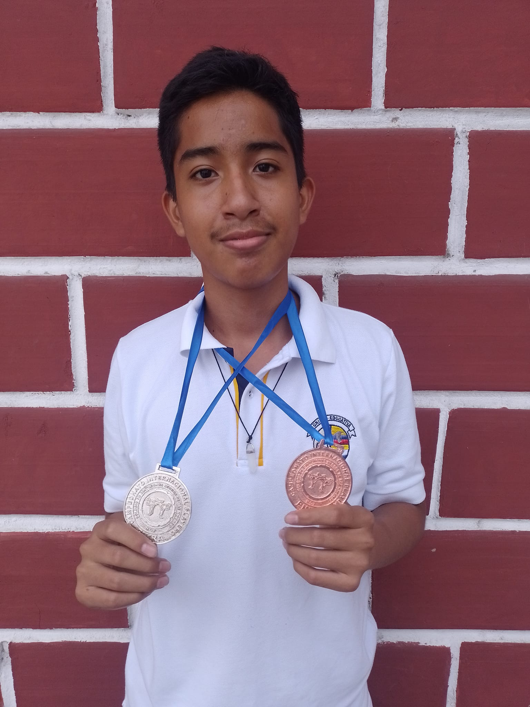
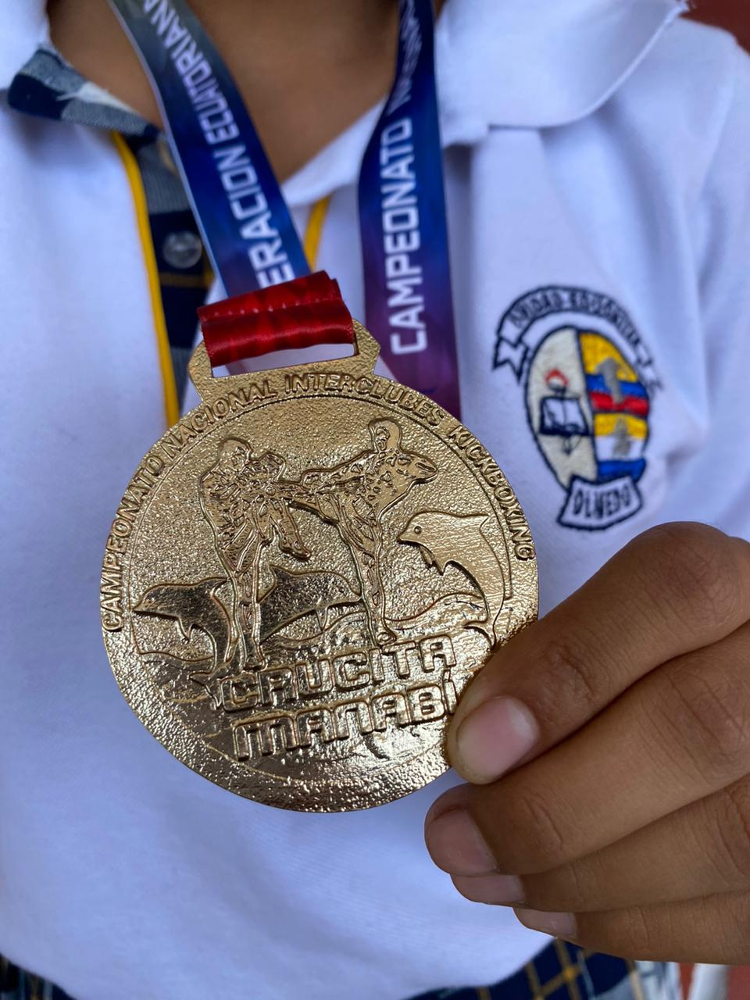
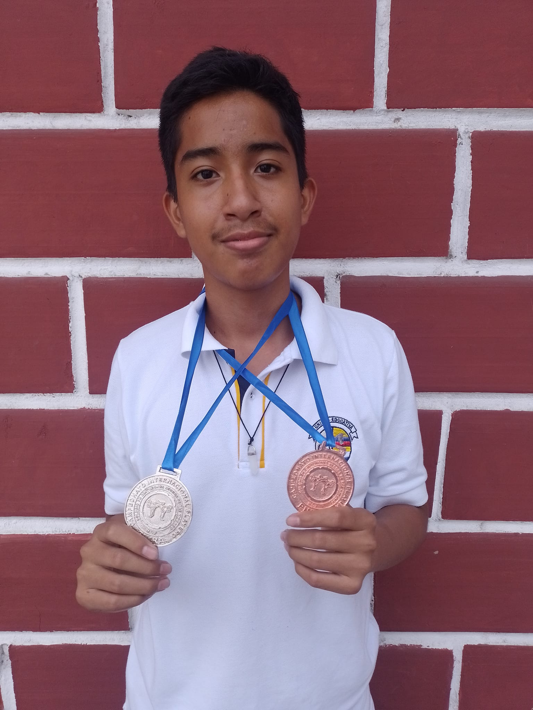
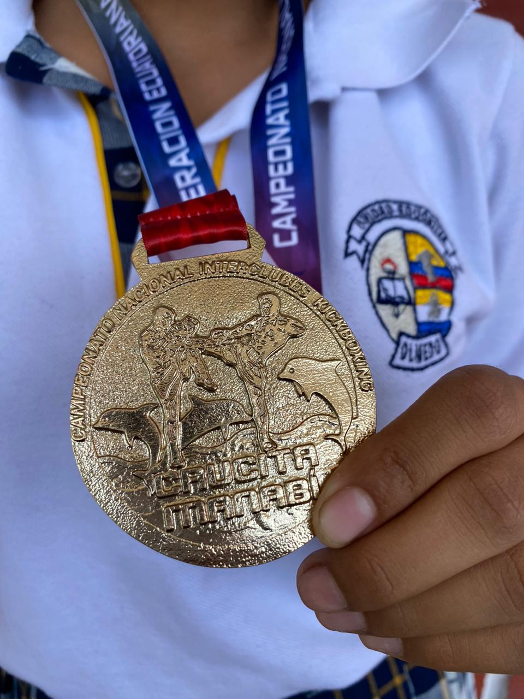

Haz click en cualquier carta para voltearla y conocer al jugador
El grupo de cheerleaders de la Unidad Educativa Olmedo del cantón Daule, formado en 2024, se ha destacado por su energía, disciplina y talento en cada presentación. Desde su creación, ha participado activamente en actos cívicos, culturales y deportivos, demostrando coordinación, compromiso y espíritu de equipo. Sus integrantes combinan la danza, la expresión corporal y la animación escolar, convirtiéndose en un símbolo de orgullo institucional. Gracias a su dedicación, el grupo ha logrado reconocimiento dentro y fuera del plantel, fortaleciendo la identidad olmedina y motivando a otros estudiantes a desarrollar sus talentos artísticos y deportivos.